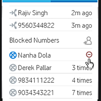
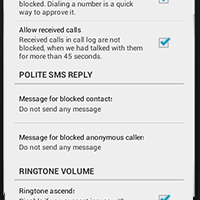
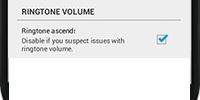
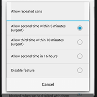
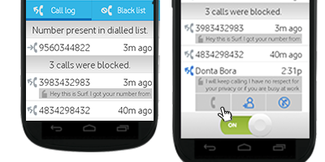
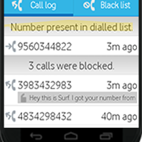

Silent Ninja will block all anonymous numbers(spammers) once you switch on the application (however you can always turn this option off) And Silent Ninja gives you number of ways to manually block people:
Find the number in black list and select it. A red minus button appears, tapping which removes the number from the list.
To unblock a recently blocked number, go to the blacklist screen, immediately after the call was blocked. A green minus icon appears when the number is select and tapping the icon unblocks the number.
Yes you can! You have to add contacts or anonymous callers to the black list.
When Silent Ninja blocks a call, we don't notify the person who was trying to reach you. The only way the other party will know you're using Silent Ninja to block calls is if you tell them!
You can also setup a polite message to be sent to a blocked number, notifying them that you would contact them soon. Different message replies can be sent for blocked contacts and blocked anonymous numbers.
On some devices, the dialer built into your phone is notified of incoming calls before the Silent Ninja app, so your phone may ring briefly or a notification may flash on your screen when blocked calls come in.
If you enable the Ascending ringer option in settings (enabled by default), the phone rings at a very low volume (one) initially. If the call is not blocked, the volume is raised to a user set louder level.
Well there is a probability that not every anonymous number is a spammer, it might be some important person trying to call you, so silent ninja allows the caller if he he call you back in 5mins. However you can always toggle this option from setting if you want to change this time span and call frequency to 3 times in 10mins or 2 times in 16hrs.
SilentNinja’s call log screen only shows the calls that were blocked. It also shows the calls that were disconnected by the user, without picking up the phone.
It shows any older or new message from the same caller.
It provides easy interface to dial back all unknown numbers, so that we don’t have to look for them through the normal call log (where they would get sparsed among other calls).
There can be different reason for a call not getting blocked. Maybe the caller caller repeatedly or maybe you had dialled the number or there exists a received call in the call log.
Call Log displays the reason, when a number we expect to be blocked is not blocked. Immediately go to the call log (after the call) to find the reason on top of the list. These rows disappear after sometime.
